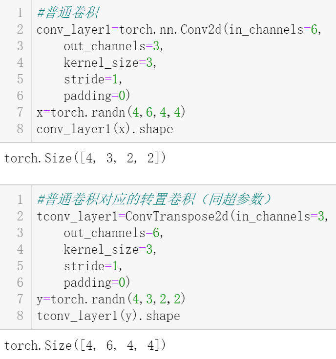
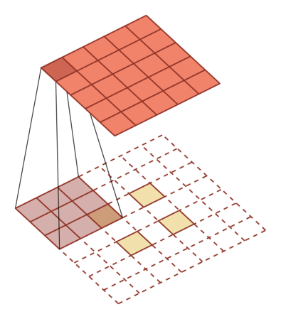

何为转置卷积?
正如你所熟知的那样，卷积操作可以从特征图中提取信息，并且经过卷积的特征图的尺寸会变小或者不变。

那么问题来了，如果我想让特征图尺寸变大(即对特征图进行上采样)，应该怎么做呢？
一种方法是，直接做插值操作，从而完成对特征图的上采样。
这的确可以，但是，这种上采样的过程中不包含可学习的参数，所以，一个想法冒出：可不可以也通过具有可学习参数的卷积操作实现对特征图的上采样呢？
这就引出了今天的主角：转置卷积。
什么是转置卷积
以一维卷积为例，对于一个5维向量$x=[x_1,x_2,x_3,x_4,x_5]$，使用kernel_size为3的卷积核$W=[w_1,w_2,w_3]$做卷积操作，根据卷积后的特征图尺寸计算公式(默认步长为1，不加padding，不加dialation，不做分组)
$$\frac{n-f+2p}{s}+1$$
可计算得到输出特征图(一维向量)的维度是$(5-3+2*0)/1+1=3$，不妨记输出向量为$z=[z_1,z_2,z_3]$.
事实上，上述操作在计算机中是以矩阵乘法的形式实现的。具体地，根据卷积核写出对应的Toeplitz矩阵，至于这是个啥，这里可以先不做了解，继续上面的栗子。
总之，上述卷积操作可以转为如下的矩阵乘法：
$$z=\left[ \begin{matrix} w_1 & w_2 & w_3 & 0 & 0\ 0 & w_1 & w_2 & w_3 & 0 \ 0 & 0 & w_1 & w_2 & w_3 \end{matrix} \right]{[x_1,x_2,x_3,x_4,x_5]}^T=Cx$$
我们已经知道，上述操作将一个5维向量$x$转成了一个3维向量$z$.
而
$$C^Tz=\left[ \begin{matrix} w_1 & 0 & 0 \ w_2 & w_1 & 0\ w_3 & w_2 & w_1 \0 &w_3 & w_2 \ 0 & 0 & w_3\end{matrix} \right]{[z_1,z_2,z_3]}^T$$
这一操作将3维向量$z$转成了一个5维向量，尽管这个结果的元素和原先的$x$的元素是不一样的，但是两者的维度是一样的。以上其实就是转置卷积的过程。
看，$C$和$C^T$互为转置关系，这也正是转置卷积名称的由来。
下面总结一下转置卷积的特点。
转置卷积的特点
转置卷积也是一种卷积。
假设对于H*W的特征图，经过卷积操作后特征图尺寸为H'*W'，那么在同样的超参数下(kernel_size, stride,…)对应的转置卷积操作会将H'*W'的特征图”还原”成原特征图尺寸，即H*W.
注意，这里的”还原”，只是还原了特征图的尺寸，但是特征图中每个元素的值一般来说是无法还原回去的，具体可以看上一部分所举的栗子。
PyTorch中的转置卷积
PyTorch提供了torch.nn.ConvTranspose2d用于执行转置卷积操作。
用栗子说话：
1 | #导入所需库/函数 |
第一个栗子：填充为0，步长为1。
此时，执行转置卷积相当于先给输入填充k-1，即p=k-1，其中k是卷积核尺寸，然后执行普通的卷积操作(按照写入的超参数进行，即;填充为0，步长为1)就可以了。

卷积示意图：
转置卷积示意图：
第二个栗子：填充为0，步长大于1。
此时，需要先在输入的行和列之间插入s-1个0，其中s为步长，然后再给输入填充k-1，其中k是卷积核尺寸，接着执行普通卷积操作即可。
卷积示意图：
转置卷积示意图：

现将转置卷积常用操作过程总结如下：
- 填充为0，步长为1：
- 将输入填充
k-1（k：卷积核尺寸） - 将核矩阵上下、左右反转(转置)
- 做正常卷积(填充为0，步长为1)
- 填充为p，步长为1：
- 将输入填充
k-p-1（k：卷积核尺寸） - 将核矩阵上下、左右反转(转置)
- 做正常卷积(填充为0，步长为1)
- 填充为p，步长为s：
- 在行和列之间插入
s-1行或列（用0填充） - 将输入填充
k-p-1（k：卷积核尺寸） - 将核矩阵上下、左右反转(转置)
- 做正常卷积(填充为0，步长为1)
最后说一下，如果你只是想使用PyTorch中的转置卷积，可以直接套下面的公式(公式可以由普通卷积计算输出特征图尺寸的公式推导得到，只需调换$H_{in}$和$H_{out}$)：
$$H_{out}=(H_{in}−1)×stride[0]−2×padding[0]+dilation[0]×(kernel_size[0]−1)+output_padding[0]+1$$
$$W {out} =(W{in}−1)×stride[1]−2×padding[1]+dilation[1]×(kernel_size[1]−1)+output
_padding[1]+1$$
比如，在栗子1中:
$$H_{out}=(2-1)1-20+1*(3-1)+0+1=4$$
在栗子2中:
$$H_{out}=(2-1)2-20+1*(3-1)+0+1=5$$
over~
参考：